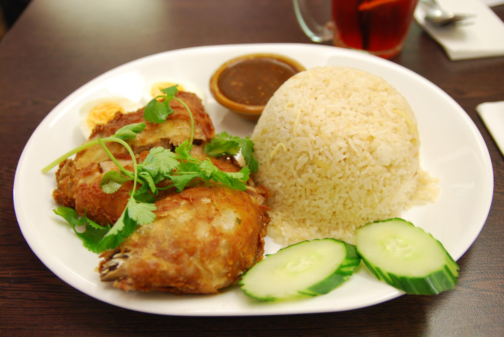

Chicken Rice

Description
Chicken Rice is a beloved Singaporean dish made with poached chicken and fragrant rice cooked in chicken broth and garlic.
It's served with a tangy chilli sauce and soy sauce, offering a simple yet flavourful experience.
Ingredients
- Whole chicken
- Jasmine rice
- Garlic and ginger
- Chicken stock
- Soy sauce
- Chilli and lime (for sauce)
- Spring onions
Steps
- Poach the chicken in a pot of water with ginger and garlic.
- Remove chicken and cool it under cold water.
- Cook rice using chicken broth, garlic, and ginger.
- Chop chicken and drizzle with soy sauce and sesame oil.
- Serve with rice, chilli sauce, and sliced cucumber.
Home